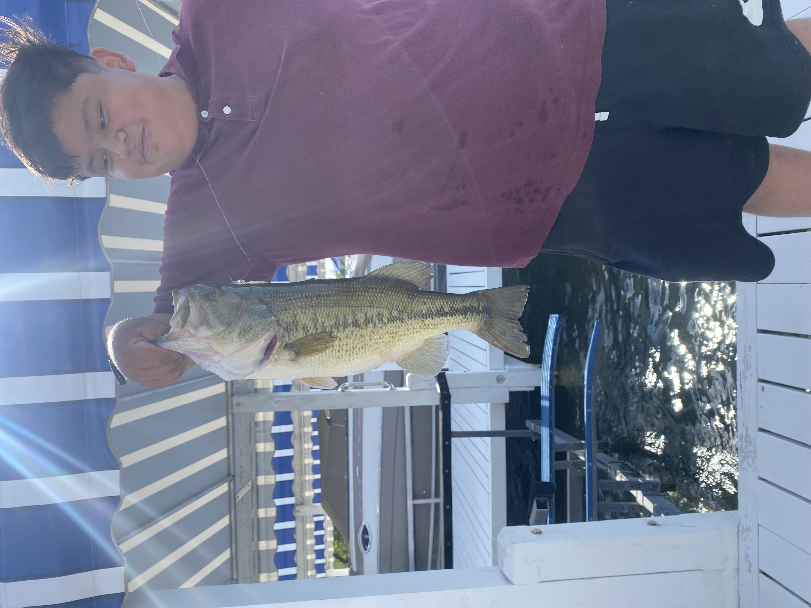
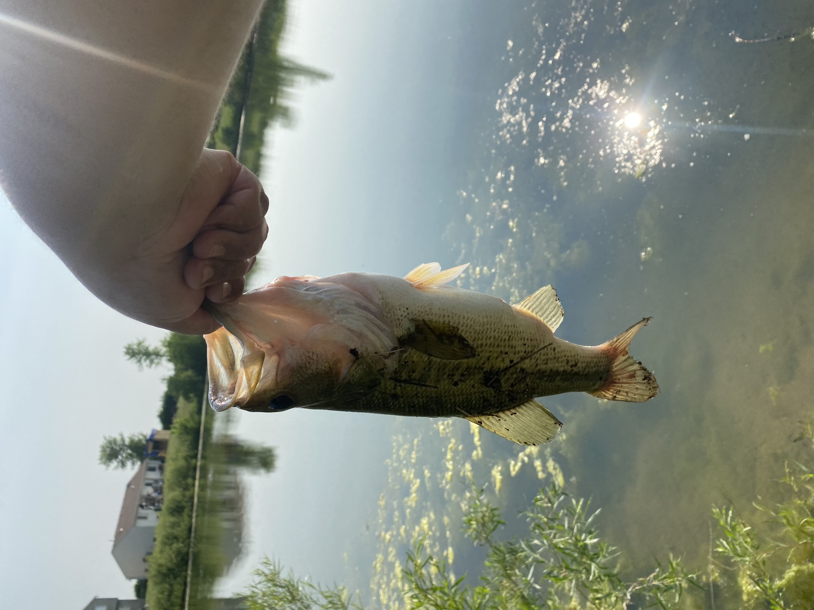

Fishing
I enjoy fishing a lot. During the summer and Spring months I would go fishing around 3 times a week. Currently my biggest catch is this bass shown below and unfortunately I forgot to take my weight scale but if I had to guess it was around 7 pounds
The reason I like fishing is because it is never guaranteed you will catch a fish and when you feel your line pull it gives you a sense of adrenalin when try to retrieve it.
